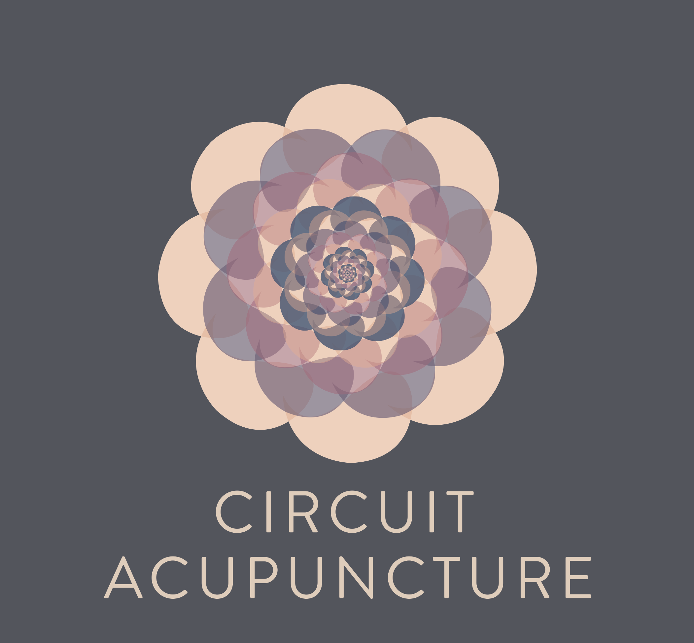

Skip to main content

About Us
Vision
Services
Research
Schedule
Open Menu
Research Links
Research from Zang-Hee Cho, Neurologist
National Center for Complementary and Integrative Health
The mechanism of acupuncture and clinical applications